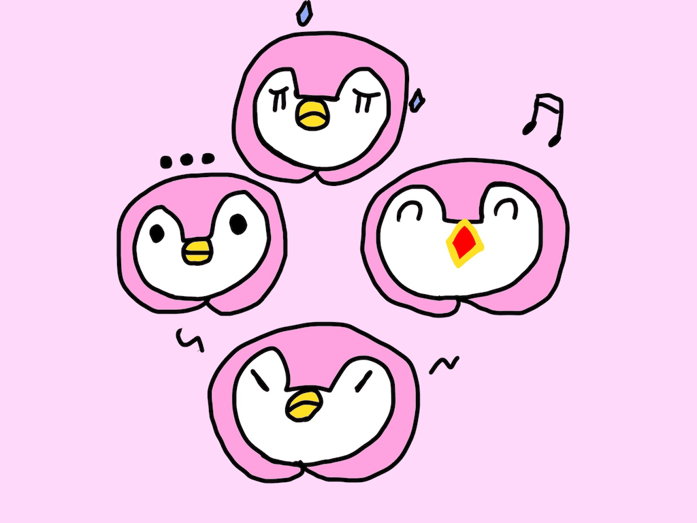
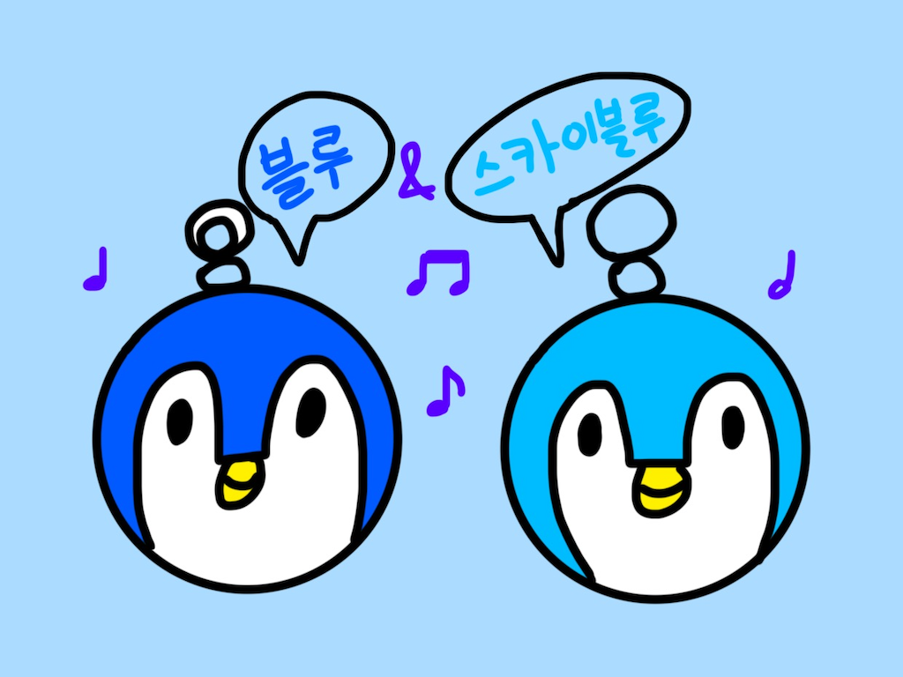
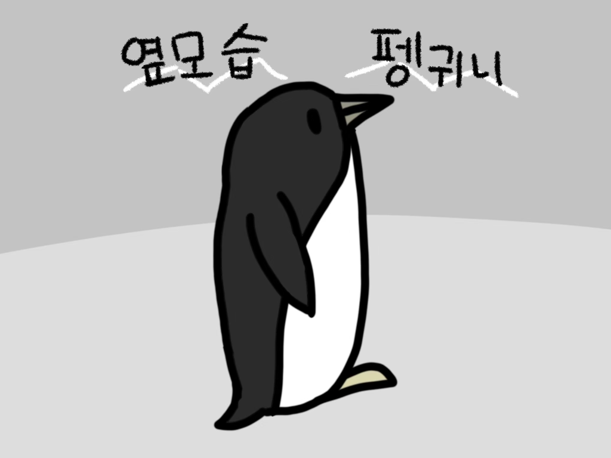
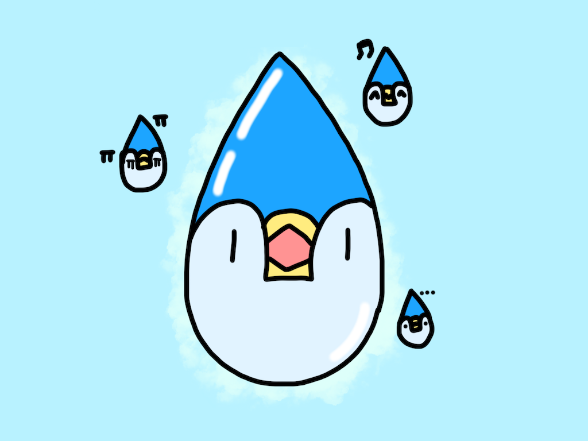
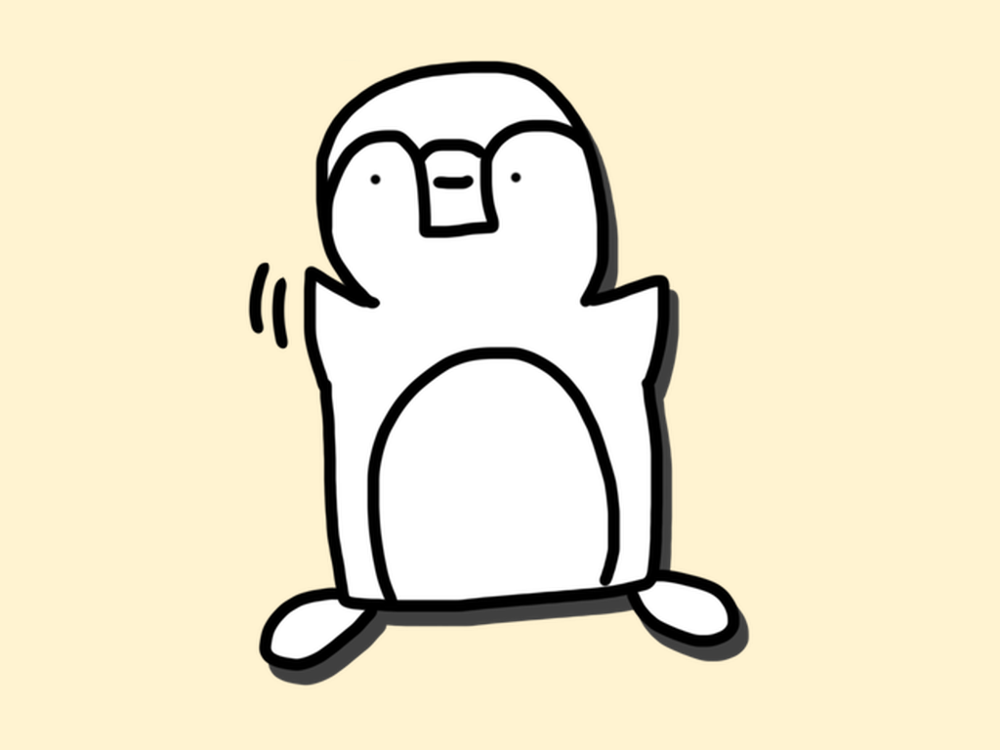
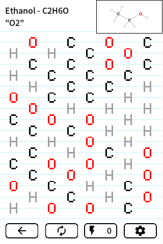

뒤뚱이모티콘 Penguini Stickers
드디어 뒤뚱이모티콘을 비롯한 귀여운 펭귀니 스티커를 안드로이드에서도 쓸 수 있습니다. 스티커를 누르면 카카오톡을 비롯해 이미지를 받을 수 있는 어떤 앱으로든 바로 보낼 수 있습니다. 현재 다섯 팩, 98종이 들어 있습니다.
최신 소식
- 하찮은 펭귀니 11종이 새로 들어왔습니다. 안드로이드에서 먼저 만나볼 수 있습니다.
각 스티커 소개
뒤뚱이모티콘
크리스마스가 생일이고 귀여운 대표 펭귄 뒤뚱이

블루 앤 스카이블루
최고의 친구 블루와 스카이블루

옆모습 펭귀니
옆모습만 보여주는 펭귀니

물방울 펭귀니
물의 날에 태어난 물방울 펭귀니. 깨끗한 물의 소중함을 다시 한 번 생각해봐요!

하찮은 펭귀니
하찮지만 소중한 펭귀니

히스토리
- 2026. 8.
- 안드로이드 앱, 그리고 하찮은 펭귀니
- 2025. 8. ~ 10.
- 물방울 펭귀니 작업
- 2024. 12. ~ 2025. 1.
- 옆모습 펭귀니 1.1.0, 1.2.0
- 2024. 8.
- 옆모습 펭귀니 작업 시작
- 2024. 2.
- 블루 앤 스카이블루 배포
- 2023. 6.
- 블루 앤 스카이블루 작업 시작
- 2022. 10. ~ 2024. 8.
- 뒤뚱이모티콘 1.2 ~ 1.6.2, 스티커를 조금씩 추가
- 2022. 7.
- 뒤뚱이모티콘 첫 배포
개인정보
계정도 로그인도 없고, 이름·전화번호 같은 개인 식별 정보를 수집하지 않습니다. 누구에게 보냈는지도 앱은 알지 못합니다. 앱이 얼마나 쓰이는지와 어떤 스티커가 인기 있는지는 익명 통계로 수집하며, 화면 위쪽 배너 광고를 띄우기 위해 광고 ID가 사용됩니다. 수집 항목 자세히 보기
홍보
오가닉팝 Organic Pop
옥텟 규칙에 맞춰 원자를 이으면 분자가 완성되면서 팝하고 사라집니다. 수소 분자에서 시작해 카페인, 이부프로펜을 거쳐 인슐린까지 만들어 보세요.
